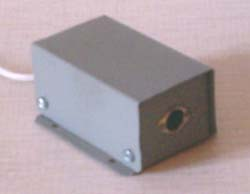
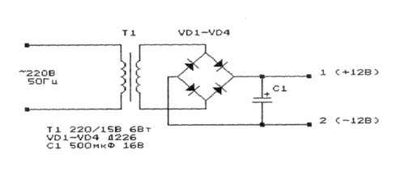
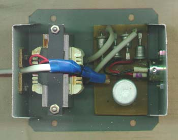

Блок питания вентиляторов 12 В 500 мА

Широкое распространение достаточно дешевых компьютерных вентиляторов позволяет использовать их для охлаждения разнообразных приборов и устройств, например, устройств намагничивания [4], радиаторов силовых ключей преобразователей напряжения =12/~220 В [2, 3] или для вентиляции рабочего места. Для вентилятора блока питания компьютера или внутрикорпусного (приблизительными размерами 80 х 80 х 25 мм3) требуется источник постоянного напряжения 12 вольт с выходным током порядка 250 мА. Если применять два вентилятора для повышения производительности, то выходной ток следует увеличить до 500 мА. Желательно, чтобы блок питания отличался простотой конструкции и эксплуатации. Предлагаемое устройство позволяет обеспечить питанием два вентилятора с использованием в качестве первичного источника сети переменного тока напряжением 220 В частотой 50 Гц.
Технические данные блока питания:
Описание:
Схема блока питания вентиляторов приведена на рис. 1, а на рис. 2 - его внутренний вид. Трансформатор T1 служит для получения переменного напряжения 12 В. С помощью диодного моста VD1 - VD4 происходит преобразование переменного напряжения в постоянное. Конденсатор C1 используется в качестве фильтра. В качестве выходного разъема применен разъем СГ-5.

Рис. 1. Схема электрическая принципиальная блока питания вентиляторов.

Рис. 2. Внутренний вид блока питания вентиляторов.
Все детали блока питания смонтированы на П-образном шасси, которое закрывается сверху П-образной крышкой, крепящейся четырьмя саморезами.
Силовой трансформатор блока питания может быть намотан самостоятельно с использованием подходящего трансформаторного железа, например, Ш-образного. Формулы для приближенного расчета трансформатора:
где Pmin - минимальная мощность трансформатора, Вт; S - площадь поперечного сечения используемого сердечника (для Ш-образного - площадь средней ножки), см2; Preal - реальная мощность трансформатора при использовании выбранного сердечника, Вт; U1- напряжение на первичной обмотке, В; U2 - напряжение на вторичной обмотке, В; W1 - число витков первичной обмотки; W2 - число витков вторичной обмотки; d1 - диаметр провода первичной обмотки, мм; d2 - диаметр провода вторичной обмотки, мм.
Например, минимальная мощность трансформатора на напряжение 12
В и ток 500 мА должна быть не менее 6 Вт. Тогда S > 2.8 см2.
Пусть имеется трансформаторное железо Ш15, толщина набора 20 мм. В этом случае S
= 3 см2, а передаваемая мощность Preal = 6.8 Вт.
Тогда W1 = 220 ∙ 50/3 ~ 3660
витков, W2
= 12 ∙ 50/3 = 200 витков. d1 =
0.6
∙ (6.8/220)1/2
~ 0.018 мм, d2 = 0.6 ∙ (6.8/12)1/2
~ 0.45 мм.
Для расчета трансформатора может быть также использована программа Transformer [1].
Ссылки:
11.10.2004
17.06.2010
Альтернативные источники
энергии
Компьютеры и
Интернет
Магнитные поля
Механотронные системы
Перспективные
разработки
Электроника и технология